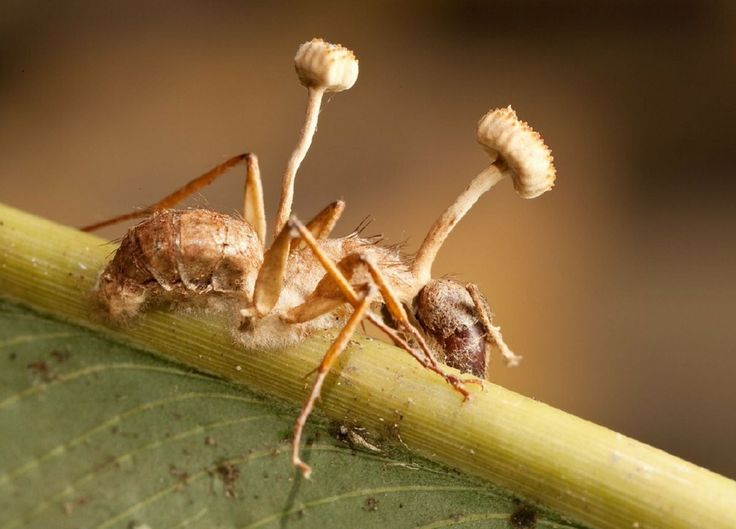
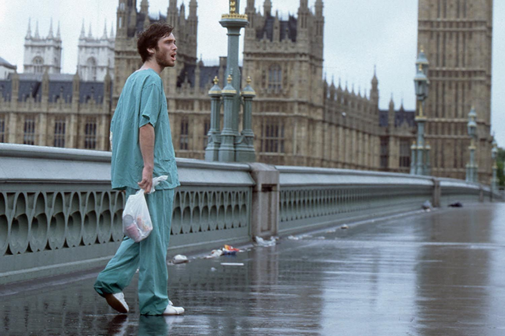

What are zombies?
Let's get one thing straight: not all zombies are created equal. At their core, zombies are the reanimated dead (or the recently infected) who've lost the lease on their own minds; no more free will, no more personality, just a single minded devotion to one very unpleasant hobby: eating or infecting you. The concept has ancient roots in Haitian Vodou folklore, where a "zombi" was a person stripped of their soul and free will by a bokor (sorcerer) and forced into servitude with no brain eating required, just eternal, joyless obedience. It wasn't until George Romero's Night of the Living Dead (1968) that zombies got their flesh-craving makeover and became the shambling, groaning icons we know today. From there, the mythology split into countless subspecies: slow zombies who rely on numbers and patience, fast "infected" who sprint like they've got somewhere to be, and virus born hordes that blur the line between zombie and rage fueled human. Whatever the cause be: cursed magic, a leaked pathogen, radioactive fallout, or "science we probably shouldn't have messed with", one rule holds true across the genre: if it's slow, shuffling, and smells like it's been dead a week, do not, under any circumstances, try to pet it.

Where do they come from?
Ask ten zombie stories where the undead came from and you'll get eleven answers. The classics lean on the supernatural: a sorcerer's curse, a cursed burial ground, or the old Haitian Vodou belief that a bokor could snatch your will and leave a body behind. Then Romero's era added cosmic weirdness and radiation, with a mysterious space probe fingered as the culprit in Night of the Living Dead. Modern zombies mostly blame science gone sideways: a lab leaked virus, a rogue parasite, or a "miracle" drug with some very unfortunate side effects. And then there's the shrug option, "nobody knows," where the outbreak simply happens and the survivors are too busy running to hold a press conference. The wildest part? Real nature has some zombie adjacent tricks of its own. The Ophiocordyceps fungus hijacks ants and marches them up plant stems before it sprouts from their heads, and rabies is famous for turning its hosts aggressive. Reality got there first, and it wasn't even trying.

Zombie Media
Zombies have shambled into just about every corner of pop culture. On the big screen, you can trace the whole family tree from the eerie White Zombie (1932) to Romero's Dawn of the Dead, the comedy of Shaun of the Dead, and the full-speed chaos of Train to Busan. On TV, The Walking Dead proved audiences would follow the apocalypse for over a decade, and The Last of Us showed the undead could make prestige drama. Video games let you fight them yourself, from Resident Evil and Left 4 Dead to the surprisingly wholesome Plants vs. Zombies. And on the page, books like World War Z treat an outbreak like a global history project. Whatever your medium, there's a zombie for that.

What comes next?
Now that you know where the undead come from, the real question is what they do once they get here. Some zombies shamble, some sprint, and some are smart enough to open doors, which is honestly rude. Next up, we'll break down the different types of zombies, from the slow and groaning classics to the fast and furious infected, so you can tell your walkers from your runners before it matters. Grab your popcorn and keep scrolling, because the story is just getting good.